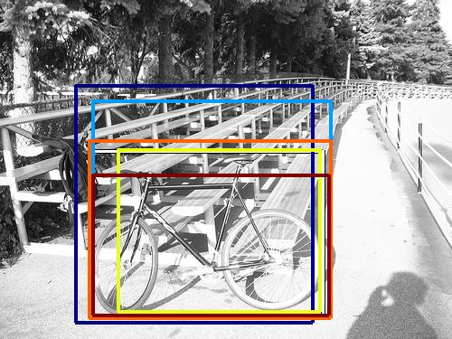
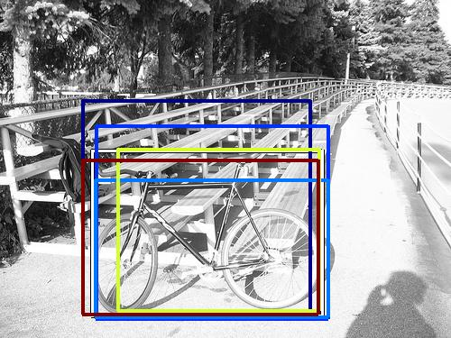
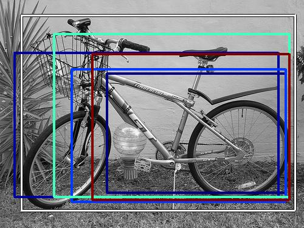

0.535493

0.608482

0.623549

0.686055

0.689603

0.701844

0.709789

0.750823

0.766016

0.775281
| Target image | 0.535493 | 0.608482 | 0.623549 | 0.686055 | 0.689603 | 0.701844 | 0.709789 | 0.750823 | 0.766016 | 0.775281 |
Target image |  7726.493652 |  7464.095703 |  6183.157715 |  6068.169922 |  5681.442871 |  5520.078125 |  5314.319336 |  5138.488281 |  4815.822266 |  4451.069336 |
Target image |  13334.244141 |  9612.576172 |  9563.561523 |  9477.099609 |  7187.699707 |  6838.569824 |  6546.492188 |  6446.833984 |  6277.034180 |  6039.825195 |
| Target image  |  14592.986328 |  12143.200195 |  9691.882812 |  8826.941406 |  8365.275391 |  7903.133789 |  7158.366211 |  7151.804688 |  6227.500977 |  6131.228027 |
| Target image  |  19617.652344 |  13846.993164 |  13350.141602 |  10244.211914 |  8648.209961 |  8160.444336 |  7582.964355 |  7312.869141 |  7141.748047 |  7130.489746 |